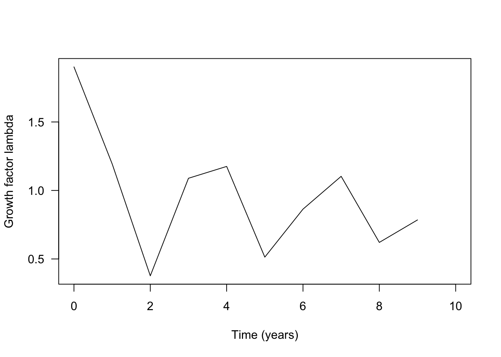

Structured populations
Population projection
Note that this exercise consists of two tabs!
Using the example from the lecture, you will in this exercise apply matrix multiplication to project population dynamics for a couple of time steps into the future.
The following code shows how to define a population projection matrix in R. We here use the three-by-three matrix from the lecture.
transition.matrix <- matrix(c(0.1,0,100,0.02,0.2,0,0,0.2,0.6), nrow=3, ncol=3, byrow=T)
transition.matrix # let's have a look at the matrix## [,1] [,2] [,3]
## [1,] 0.10 0.0 100.0
## [2,] 0.02 0.2 0.0
## [3,] 0.00 0.2 0.6Let us now define the initial population vector at time \(t=0\).
N.0 <- c(1000, 30, 15)
N.0 # let's have a look at the vector## [1] 1000 30 15In order to obtain the vector describing the population composition one time step into the future, we multiply the current population vector N.0 from the right to the population projection matrix transition.matrix. The multiplication between a matrix and a vector is executed in R using the symbol %*%.
(N.1 <- transition.matrix %*% N.0) # the parentheses around a command make that the vector N.1 is immediately shown, that is, without explicitly asking for it as was done in the two previous commands.## [,1]
## [1,] 1600
## [2,] 26
## [3,] 15The next piece of code shows how you can alter the code above to produce to the population vector N.2 describing the population composition two time steps into the future.
(N.2 <- transition.matrix %*% N.1)## [,1]
## [1,] 1660.0
## [2,] 37.2
## [3,] 14.2Use the this procedure to produce the population vectors for the first ten time steps, N.1, N.2,..., N.10. How do you have to adapt the code to do this?
Next, let us compute the total number of individuals at time t=0, t=1 until t=10 using the command sum(). Below you see the code showing how to do this for the first three time steps.
(Ntot.0 <- sum(N.0)) ## [1] 1045(Ntot.1 <- sum(N.1))## [1] 1641(Ntot.2 <- sum(N.2))## [1] 1711.4Now we have everything to create a time series plot. With this we mean a plot with time on the x-axis and Ntot on the y-axis. The next piece of code shows how to do that for the first three time steps, Ntot.0, Ntot.1 and Ntot.2.
plot(x=c(0:2), y=c(Ntot.0, Ntot.1, Ntot.2), type = "b", xlab="Time (years)", ylab="Ntot.t", las=1)If you have computed Ntot for the first ten time steps you can add them to the plot by changing c(0:2) to c(0:10) (the points on the axis) and y=c(Ntot.0, Ntot.1, Ntot.2) to y=c(Ntot.0, Ntot.1, Ntot.2, Ntot.3, Ntot.4, Ntot.5, Ntot.6, Ntot.7, Ntot.8, Ntot.9, Ntot.10) (the values on the y-axis) in the above code.
Next, let’s have a look at the population composition. How is the total number of individuals distributed over the different life-history states? Thus, let us first plot the population vectors N.0, N.1 and N.2in form of a bar plot.
barplot(cbind(N.0, N.1, N.2), las=1, col=c("grey", "green", "red"), names.arg=c("N.0", "N.1", "N.2"), ylab="Number of individuals", xlab="Time (years)", ylim = c(0, 2000))
legend("topright", bty="n", legend=c("Seeds", "Seedlings", "Adults"), fill=c("grey", "green", "red"), horiz=T)Please adapt this code to include the data for the all time steps until t=10.
It is also common (and informative) to plot the population vectors as relative numbers to show what relative proportion of the population belongs to each life history state. For this we have to divide the number of individuals in each state by the total population size at that time step.
barplot(cbind(N.0/Ntot.0, N.1/Ntot.1, N.2/Ntot.2), col=c("grey", "green", "red"), las=1, names=c("N.0", "N.1", "N.2"), ylab="Proportion of individuals", xlab="Time (years)")
legend("bottom", bty="n", legend=c("Seeds", "Seedlings", "Adults"), fill=c("grey", "green", "red"), horiz=F)Again, please adapt this code to include the data for the all time steps until t=10.
What do you observe in terms of the relative state distribution?
Finally, let us calculate the growth factor \(\lambda\) at each time step. For this we have to divide the total population size of two consecutive time steps by each other: \[ \lambda(t) = \frac{N_{\rm tot}(t+1)}{N_{\rm tot}(t)}. \] Thus
(lambda.0 <- Ntot.1/Ntot.0)## [1] 1.570335(lambda.1 <- Ntot.2/Ntot.1)## [1] 1.042901and so forth. Please, do this computation for all 10 \(\lambda\)-values
Let’s make a plot that shows how \(\lambda\) changes over time from \(t=0\) to \(t=10\).
plot(x=c(0:9), y=c(lambda.0, lambda.1, lambda.2, lambda.3, lambda.4, lambda.5, lambda.6, lambda.7, lambda.8, lambda.9), type = "b", xlab="Time (years)", ylab="growth factor lambda", las=1)At the end of this part, you should complete the following tasks.
Project the population ten years into the future and describe in words how the population changes in both absolute and relative numbers. Does the population fluctuate, increase or decrease?
Compute the growth factor \(\lambda\) for ten years and describe how it changes over time. What do you observe.
Execute the computations under (1) and (2) for three different initial population vectors \(N_0\), namely: \(N_0=(1000, 30, 15)\), \(N_0=(10, 0, 0)\) and \(N_0=(0, 10, 0)\). Can you make a figure that shows the time series for the three different starting values together? Similarly, can the time series for the three different starting values together in the same figure? Can you do a similar figure but with the \(\lambda\)-values as computed from the different starting vectors? Summarize your observations.
Conservation measures
Consider a population of a rare meadow plant. In this exercise, we explore how we can use matrix models to investigate the efficiency of different conservation strategies. Along, the way you will learn (or refresh) some R-code related vectors and data frames.
Assume that after an intensive period of data collection we determined the following population transition matrix.
meadow.matrix <- matrix(c(0.001, 0, 200, 0.01, 0.2, 0, 0, 0.2, 0), nrow=3, ncol=3, byrow=T) # the vector of nine numbers is used to fill a three by three matrix
meadow.matrix # this is how the matrix looks## [,1] [,2] [,3]
## [1,] 0.001 0.0 200
## [2,] 0.010 0.2 0
## [3,] 0.000 0.2 0and the initial population vector N.0 given by
N.0 <- c(3000, 180, 30)
N.0## [1] 3000 180 30At the end of this exercise, you should answer the following questions.
Draw the life cycle graph corresponding to this matrix. What kind of life history does this plant have? You can do this drawing by hand on a piece of paper, which you then scan and submit as a separate file, or, if you use RMarkdown, you can incorporate this digital image into your report using the command
(search the web for help).Calculate the population growth factor \(\lambda\) and the total population size
Ntotfor 10 years and plot them as a function of time. After how many years is this population expected to consists of less than 10 adults, where it would be considered severely endangered?To protect this population, two different measures are considered. For each of these methods, project the population dynamics and plot the number of adults against time. Which conservation measure is preferable?
Adding 100 adult plants from a different population once at year \(t=0\). This can be done by changing the starting vector to
N.0 <- c(3000, 180, 130)Increasing recruitment of juveniles from seeds by creating small open sites in the meadow each year. This is expected to result in a transition probability from seeds to juveniles equal to \(0.025\). To implement this, you have to change the corresponding entry in the
meadow.matrix.
In order to make investigating these questions easier, we need some additional R-magic. In particular, we want to use R-code that let’s us compute a whole time series with a single command. For this, we make use of what is called a for-loop.
Before we “run” the for-loop to create a time series, we create a data frame in which we can store the data from the time series of length 10. Specifically, each row in the data frame will correspond to one time step, with the starting population vector \(N_0\) in the first row. We name this data frame ts, abbreviating time series, and initially fill all entries with NA(for “not available”). You can think of a data frame as an EXCEL sheet but in R. Thus, a data frame is a matrix where we can give names to rows and columns to describe what is stored in the different cells of the data frame.
ts <- data.frame(time=c(0:10), Seeds=rep(NA,11), Juv=rep(NA,11), Adults=rep(NA,11))Let’s check how the data frame looks at the moment. Note that this data frame has 11 rows, one for time 0 and ten for the future time steps.
ts## time Seeds Juv Adults
## 1 0 NA NA NA
## 2 1 NA NA NA
## 3 2 NA NA NA
## 4 3 NA NA NA
## 5 4 NA NA NA
## 6 5 NA NA NA
## 7 6 NA NA NA
## 8 7 NA NA NA
## 9 8 NA NA NA
## 10 9 NA NA NA
## 11 10 NA NA NALet us fill the first column of the data frame with the population vector at time zero.
ts$Seeds[1] <- N.0[1]
ts$Juv[1] <- N.0[2]
ts$Adults[1] <- N.0[3]
ts # Check whether this was entered correctly by printing the data frame.How does the above code work? Recall that you can refer to a column of a data frame by adding the name of the column to the name of the data frame, separated by a $-sign. Thus, ts$Seeds refers to the second column in our data frame ts. Furthermore, adding a pair of square brackets lets us refer to certain entries in a column. For instance, ts$Seeds[1] refers to the first entry in the column labelled Seeds. In conclusion, the command ts$Seeds[1] <- N.0[1] assigns the first entry of the vector N.0 to the first entry in the Seeds-column in the data frame.
In order to calculate the population vector after one time step, N.1, we have to multiply the population vector at time 0, N.0, with the meadow.matrix. Using the fact that N.0 is now written in the first row of the data frame ts, we can program this as follows:
meadow.matrix %*% as.numeric(ts[1, -1]) ## [,1]
## [1,] 6003
## [2,] 66
## [3,] 36There are two new things happening in this code. First, now we have two numbers in the square brackets after ts, ts[1, -1]. The first number refers to the row and the second number to the column. But what does -1 mean for the column? It means “all entries except the first one”. Thus, with the code ts[1, -1] we select the first row but without the first entry in this row. This makes sense as this the first column is time, and we only want the population vector, which is stored in the columns 2, 3 and 4.
Second, the vector that we just created is inside the function as.numeric(). This is necessary, since data frames can in principle store objects other than numbers and we have to tell R that the vector that we extracted from the data frame contains numbers such that R can do calculations with it.
Now we are ready to compute a time series of length 10 by using a for-loop.
for (i in 1:10) # the loop "runs" from i=1 to i=10 (representing the years 1 to 10 in the data frame)
{
ts[i + 1, -1] <- meadow.matrix %*% as.numeric(ts[i, -1]) # computes the population vector one time step into the future and stores it in the next row of the data frame
}
ts # check that the all positions in the data frame are now indeed filled with numbers## time Seeds Juv Adults
## 1 0 3000.000 180.00000 30.000000
## 2 1 6003.000 66.00000 36.000000
## 3 2 7206.003 73.23000 13.200000
## 4 3 2647.206 86.70603 14.646000
## 5 4 2931.847 43.81327 17.341206
## 6 5 3471.173 38.08113 8.762653
## 7 6 1756.002 42.32796 7.616225
## 8 7 1525.001 26.02561 8.465591
## 9 8 1694.643 20.45513 5.205122
## 10 9 1042.719 21.03746 4.091026
## 11 10 819.248 14.63468 4.207492It is now easy to add an additional column with the total population size at each time step, using the function rowSums(). You should obtain the following data frame.
ts$N <- rowSums(ts[, -1]) # computes the total population size at each time step and add this as a new column called N
ts## time Seeds Juv Adults N
## 1 0 3000.000 180.00000 30.000000 3210.0000
## 2 1 6003.000 66.00000 36.000000 6105.0000
## 3 2 7206.003 73.23000 13.200000 7292.4330
## 4 3 2647.206 86.70603 14.646000 2748.5580
## 5 4 2931.847 43.81327 17.341206 2993.0017
## 6 5 3471.173 38.08113 8.762653 3518.0168
## 7 6 1756.002 42.32796 7.616225 1805.9460
## 8 7 1525.001 26.02561 8.465591 1559.4922
## 9 8 1694.643 20.45513 5.205122 1720.3035
## 10 9 1042.719 21.03746 4.091026 1067.8475
## 11 10 819.248 14.63468 4.207492 838.0902Finally, let us calculate the growth factor \(\lambda\) at each time step: \(\lambda(0), \ldots, \lambda(9)\). Note that \(\lambda(0)\) predicts how the population size changes from \(t=0\) to \(t=1\) and \(\lambda(9)\) predicts how the population size changes from \(t=9\) to \(t=10\). Each \(\lambda\)-value is calculated dividing the population size at a time step by the population size at the previous time step (see first tab).
We can calculate all \(\lambda\)-values in one step by dividing the column pop.dev$N without the first entry (pop.dev$N[-1]) by pop.dev$N without the last entry (pop.dev$N[-length(pop.dev$N)]). Make yourself clear why this works!
lambdas <- ts$N[-1]/ts$N[-length(ts$N)]
lambdas## [1] 1.9018692 1.1945017 0.3769055 1.0889352 1.1754143 0.5133421 0.8635320
## [8] 1.1031177 0.6207320 0.7848407This gives a vector of length 10. Let us add this vector as a new column to our data frame. Since ts has 11 rows we first have to make sure that our vector lambdas also has length 11. We can do this by adding NA (for “not available”) as a last entry. Indeed, we did not calculate \(\lambda(10)\), as this would require that we calculate \(N_{\rm tot}(10)\).
lambdas <- append(lambdas, NA) # append NA at the 11th position in this vector
ts$lambda <- lambdas # adding this vector as a column labelled lambda to the data frame
ts # let's have a look at the final data frame## time Seeds Juv Adults N lambda
## 1 0 3000.000 180.00000 30.000000 3210.0000 1.9018692
## 2 1 6003.000 66.00000 36.000000 6105.0000 1.1945017
## 3 2 7206.003 73.23000 13.200000 7292.4330 0.3769055
## 4 3 2647.206 86.70603 14.646000 2748.5580 1.0889352
## 5 4 2931.847 43.81327 17.341206 2993.0017 1.1754143
## 6 5 3471.173 38.08113 8.762653 3518.0168 0.5133421
## 7 6 1756.002 42.32796 7.616225 1805.9460 0.8635320
## 8 7 1525.001 26.02561 8.465591 1559.4922 1.1031177
## 9 8 1694.643 20.45513 5.205122 1720.3035 0.6207320
## 10 9 1042.719 21.03746 4.091026 1067.8475 0.7848407
## 11 10 819.248 14.63468 4.207492 838.0902 NANow we are ready to plot our results. With the following commands, we can plot the numbers in a specific column in the data frame, for example, the total population size or \(\lambda\).
plot(ts$time, ts$N, type="l", ylab="Total population size", xlab="Time (years)", las=1)
plot(ts$time, ts$lambda, type="l", ylab="Growth factor lambda", xlab="Time (years)", las=1)
We have now produced the time series for the base line model. Next, adapt the above code to produce the same results for the two conservation strategies described above. Once you have the time series for the three different scenarios (population without conservation, population with conservation measurement 1 and population with conservation measurement 2), you should be able to compare the three scenarios. Specifically, try to reproduce the following two figures.